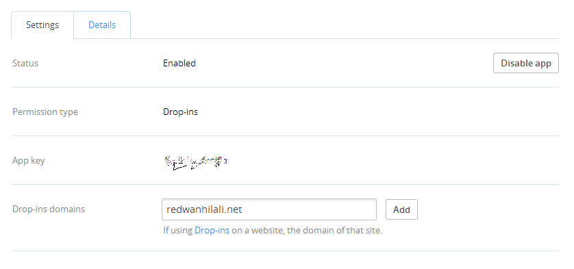

Created: 31/12/2013
By: Redwan Hilali
Email: hilali.redwan@gmail.com
Thank you for purchasing my plugin. If you have any questions that are beyond the scope of this help file, please feel free to email via my user page contact form here. Thanks so much!
This plugins gives your users the ability to Save files directly from your website to their Dropbox account instantly or the other way around, it gives the users the ability to directly upload files from their Dropbox account into your website.
Drop-ins are cross-platform UI components that can be integrated in minutes. The Chooser provides your app with instant access to files in Dropbox, and the Saver makes saving files to Dropbox one-click simple.
Saver Drop-in: The Saver is the easiest way to add files to your users' Dropboxes. With two clicks, a user can download files of any size into their Dropbox, making those files available on all their computers and devices as soon as the download completes. The Saver is a Drop-in component that works on web and mobile web
Chooser Drop-in:The Chooser is the fastest way to get files from Dropbox into your web app. It's a small JavaScript component that enables your app to get files from Dropbox without having to worry about the complexities of implementing a file browser, authentication, or managing uploads and storage
In order to use the plugin, there is two steps to get you up and running:

This plugin can be used either by shortcodes or by Template Tags.
There is two shortcodes available in this plugins:
Usage:
[dropbox_saver filename="Specify_file_name_here" url="File URL"]P.S: filename attribute is optional, if ommitted the filename from the "url" attribute will be used. Example:
The following shortcode, will save the file advice.png to the user Dropbox under the name: iamSavedFromMars.png
[dropbox_saver filename="iamSavedFromMars.png" url="https://dl.dropboxusercontent.com/s/deroi5nwm6u7gdf/advice.png"]
The following shortcode, will save the file advice.png to the user Dropbox under the name: advice.png, so we won't change the name as I didn't specify the filename attribute.
[dropbox_saver url="https://dl.dropboxusercontent.com/s/deroi5nwm6u7gdf/advice.png"]
This plugin can be used either by shortcodes or by Template Tags.
There is two tags available in this plugins:
Usage:
P.S: filename attribute is optional, if ommitted the filename from the "url" attribute will be used. Example:
The following shortcode, will save the file advice.png to the user Dropbox under the name: iamSavedFromMars.png
<?php $url = "https://dl.dropboxusercontent.com/s/deroi5nwm6u7gdf/advice.png"; $newName = "iamSavedFromMars.png"; dropbox_dropin_saver($url, $newName); ?>
The following shortcode, will save the file advice.png to the user Dropbox under the name: advice.png, so we won't change the name as I didn't specify the filename attribute.
<?php $url = "https://dl.dropboxusercontent.com/s/deroi5nwm6u7gdf/advice.png"; // I didn't specify the filename paramter dropbox_dropin_saver($url); ?>
1. After you install the plugin, and set it up as described here: Configure Drop-ins.
2. Create a new page or post.
3. copy this shortcode to the page/post you just create it: [dropbox_saver url="https://dl.dropboxusercontent.com/s/deroi5nwm6u7gdf/advice.png"]
4. View the page
5. A button "Save to Dropbox" will be displayed. Click it.
6. You'll be prompted to login in Dropbox page.
7. Select where to save.
8. Check your folder, is it there? awesome, right?
I've used the following images, APIs.
Once again, thank you so much for purchasing this plugin. As I said at the beginning, I'd be glad to help you if you have any questions relating to this plugin. No guarantees, but I'll do my best to assist. If you have a more general question relating to the plugins on CodeCanyon, you might consider visiting the forums and asking your question in the "Item Discussion" section.
Redwan Hilali